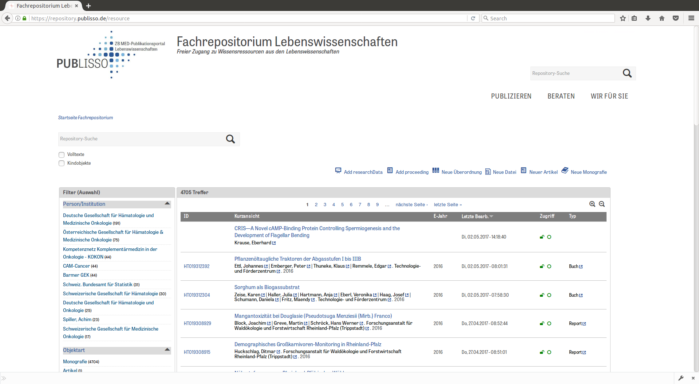
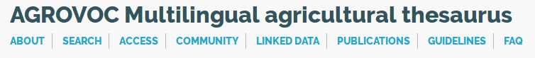
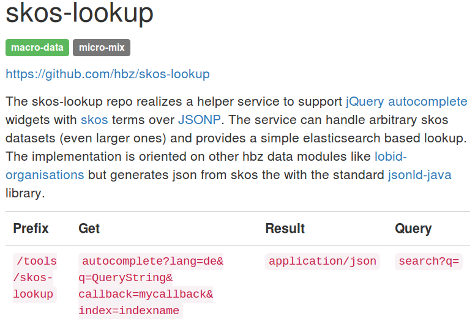
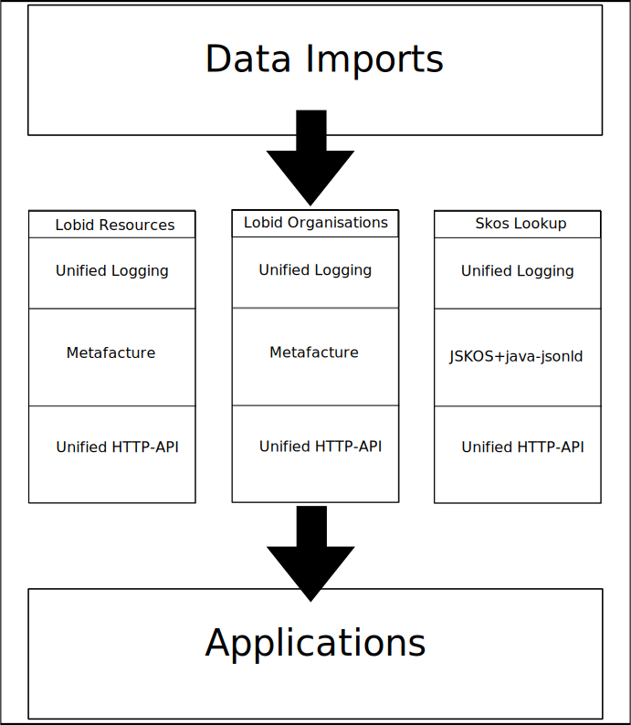

Werkstattbericht –
Autocompletion für
Agrovoc-Schlagworte mit JSKOS & Elasticsearch
Jan Schnasse,
Publikationssysteme, hbz NRW

SUB, Göttingen, 2017-05-11
Diese Präsentation:
http://hbz.github.io/slides/siit-170511
Kontext
Anwendung
- Sacherschließung mit Agrovoc
- 'Intelligentes' Feld mit Eingabeunterstützung
- Agrovoc SKOS
 ~6.200.000 rdf statements. 32707 skos concepts. 51 MB compressed. 897,7 MB uncompressed.
Aktueller Stand
Umsetzung
Als "Datenmodul" innerhalb der hbz Softwarearchitektur hbz-Datenmodule
Vorarbeiten
Orientiert an Lobid
und speziell an lobid-organisations
Ansatz von Fabian Steeg (hbz) & Simon B. Ritter (hbz)
- Embedded Elasticsearch
- HTTP Controller für Query & Import
- json-ld als Indexformat
Vorarbeiten
Datentransformation mit Hilfe von JSKOS.Version 13 Jun 2016 mit kleineren Änderungen
-"uri": "@id",
+ "id": "@id",
- "type": {
- "@id": "http://www.w3.org/1999/02/22-rdf-syntax-ns#type",
- "@type": "@id",
- "@container": "@set"
- },
+ "type": "@type",
Vorarbeiten
Jörg Prante's (hbz) Bundle Plugin
- elasticsearch-analysis-autophrase
- elasticsearch-analysis-german
- elasticsearch-analysis-hyphen
Implementation
POST /init

Implementation
Unterstützte HTTP Kommandos
POST /init
GET /init
GET /example
GET /autocomplete
GET /select2
GET /search
POST /displayPost
Dokumentation
Ausblick
- Keine unmittelbaren Pläne!
- Laden von DDC Edition 22
Kontakt
Twitter: @InspektorHicksEmail: schnasse@hbz-nrw.de
Github: GitHub
Die Slides sind unter einer CC-BY-4.0-Lizenz veröffentlicht.